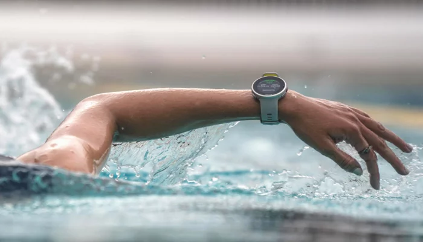

Využitie

Kamery, senzory a softvér sledujú pohyb, rýchlosť, presnosť alebo únavu športovca.
Napr. bežecké hodinky, aplikácie. Pomáhajú plánovať tréningy, merať tep, vzdialenosť, kalórie.
Technológie ako VAR (video asistovaný rozhodca) vo futbale alebo Hawk-Eye v tenise pomáhajú rozhodcom posudzovať sporné situácie.
Fanúšikovia sledujú zápasy cez internet a aplikácie.